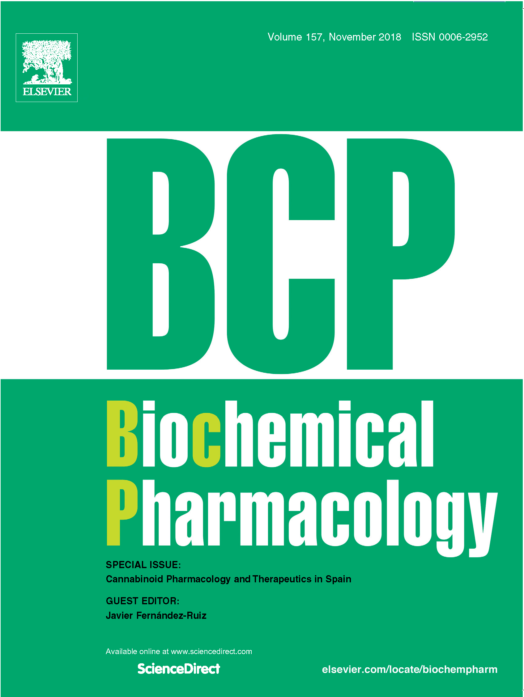

Publications
|  | 
|
2021
Fletcher MM, Keov P, Truong TT, Mennen G, Hick CA, Zhao P, Furness SGB, Kruse T, Clausen TR, Wootten D, Sexton PM. AM833 is a novel agonist of calcitonin family G protein-coupled receptors: pharmacological comparison to six selective and non-selective agonists. J. Pharmacol. Exp. Ther. 2021 Mar 16. DOI: https://doi.org/10.1124/jpet.121.000567
2020
Gupta P, Furness SGB, Bittencourt L, Hare DL, Wookey PJ. Building the case for the calcitonin receptor as a viable target for the treatment of glioblastoma. Ther Adv Med Oncol. 2020 Dec 18;12:1758835920978110. doi: 10.1177/1758835920978110.
Furness JB, Pustovit RV, Syder AJ, Ringuet MT, Yoo EJ, Fanjul A, Wykosky J, Fothergill LJ, Whitfield EA, Furness SGB. Dopamine and ghrelin receptor co-expression and interaction in the spinal defecation centers. Neurogastroenterol Motil. 2020 Dec 2;:e14051. https://doi.org/10.1111/nmo.14051
Zhang X, Belousoff MJ, Zhao P, Kooistra AJ, Truong TT, Ang SY, Underwood CR, Egebjerg T, Šenel P, Stewart GD, Liang Y-L, Glukhova A, Venugopal H, Christopoulos A, Furness SGB, Miller LJ, Reedtz-Runge S, Langmead CJ, Gloriam DE, Danev R, Sexton PM, Wootten D. Differential GLP-1R Binding and Activation by Peptide and Non-peptide Agonists. Molecular Cell. 2020 http://doi.org/10.1016/j.molcel.2020.09.020
Liu M*, Whitfield EA*, Fothergill LJ, Furness JB, Wade JD, Furness SGB#, Houssain MA#. Design, synthesis and characterization of a fluorescently labeled functional analog of full-length human ghrelin. Biochem Biophys Res Commun. 2020 Sep. 24 https://doi.org/10.1016/j.bbrc.2020.09.028
Dong M, Deganutti G, Piper SJ, Liang YL, Khoshouei M, Belousoff MJ, Harikumar KG, Reynolds CA, Glukhova A, Furness SGB, Christopoulos A, Danev R, Wootten D, Sexton PM, Miller LJ. Structure and dynamics of the active Gs-coupled human secretin receptor. Nat Commun. 2020 Aug 18;11(1):4137. doi: 10.1038/s41467-020-17791-4. PMID: 32811827
Liang YL, Belousoff MJ, Fletcher MM, Zhang X, Khoshouei M, Deganutti G, Koole C, Furness SGB, Miller LJ, Hay DL, Christopoulos A, Reynolds CA, Danev R, Wootten D, Sexton PM. Structure and Dynamics of Adrenomedullin Receptors AM1 and AM2 Reveal Key Mechanisms in the Control of Receptor Phenotype by Receptor Activity-Modifying Proteins. ACS Pharmacol Transl Sci. 2020 Mar 20;3(2):263-284. doi: 10.1021/acsptsci.9b00080. PMID: 32296767; PMCID: PMC7155201.
Zhao P, Liang YL, Belousoff MJ, Deganutti G, Fletcher MM, Willard FS, Bell MG, Christe ME, Sloop KW, Inoue A, Truong TT, Clydesdale L, Furness SGB, Christopoulos A, Wang MW, Miller LJ, Reynolds CA, Danev R, Sexton PM, Wootten D. Activation of the GLP-1 receptor by a non-peptidic agonist. Nature. 2020 Jan;577(7790):432-436. doi:10.1038/s41586-019-1902-z. Epub 2020 Jan 8. PubMed PMID: 31915381.
2019
Nguyen HTH, Wood RJ, Prawdiuk AR, Furness SGB, Xiao J, Murray SS, Fletcher JL. TrkB Agonist LM22A-4 Increases Oligodendroglial Populations During Myelin Repair in the Corpus Callosum. Front Mol Neurosci. 2019 Aug 27;12:205. doi:10.3389/fnmol.2019.00205. eCollection 2019. PubMed PMID: 31507374; PubMed Central PMCID: PMC6718610.
Pham V, Zhu Y, DalMaso E, Reynolds CA, Deganutti G, Atanasio S, Hick CA, Yang D, Christopoulos A, Hay DL, Furness SGB, Wang M-W, Wootten D, Sexton PM. Deconvoluting the Molecular Control of Binding and Signaling at the Amylin 3 Receptor: RAMP3 Alters Signal Propagation through Extracellular Loops of the Calcitonin Receptor. ACS Pharmacology & Translational Science. American Chemical Society; 2019 Mar 18;:1–15. https://doi.org/10.1021/acsptsci.9b00010
Ostrovskaya A, Hick C, Hutchinson DS, Stringer BW, Wookey PJ, Wootten D, Sexton PM, Furness SGB. Expression and activity of the calcitonin receptor family in a sample of primary human high-grade gliomas. BMC Cancer. 2019 Feb 18;19(1):157. doi: 10.1186/s12885-019-5369-y.
Dal Maso E, Glukhova A, Zhu Y, Garcia-Nafria J, Tate CG, Atanasio S,Reynolds CA, Ramírez-Aportela E, Carazo J-M, Hick CA, Furness SGB, Hay DL, Liang Y-L, Miller LJ, Christopoulos A, Wang M-W, Wootten D, and Sexton PM. The Molecular Control of Calcitonin Receptor Signaling. ACS Pharmacology & Translational Science. 2019;:acsptsci.8b00056. https://doi.org/10.1021/acsptsci.8b00056
2018
Furness SGB, Christopoulos A, Sexton PM, Wootten D. Differential engagement of polar networks in the glucagon-like peptide 1 receptor by endogenous variants of the glucagon-like peptide 1. Biochem Pharmacol. 2018 Aug 25;156:223-240. doi: 10.1016/j.bcp.2018.08.033.
Liang Y-L, Zhao P, Draper-Joyce CJ, Baltos J-A, Glukhova A, Truong TT, May LT, Christopoulos A, Wootten D, Sexton PM, and Furness SGB. Dominant Negative G Proteins Enhance Formation and Purification of Agonist-GPCR-G Protein Complexes for Structure Determination. ACS Pharmacology & Translational Science. 2018 1(1), 12-20 https://doi.org/10.1021/acsptsci.8b00017
Draper-Joyce CJ, Khoshouei M, Thal DM, Liang YL, Nguyen ATN, Furness SGB, Venugopal H, Baltos JA, Plitzko JM, Danev R, Baumeister W, May LT, Wootten D, Sexton PM, Glukhova A, Christopoulos A. Structure of the adenosine-bound human adenosine A(1) receptor-G(i) complex. Nature. 2018 Jun;558(7711):559-563. doi: 10.1038/s41586-018-0236-6. PubMed PMID: 29925945.
Liang YL, Khoshouei M, Glukhova A, Furness SGB, Zhao P, Clydesdale L, Koole C, Truong TT, Thal DM, Lei S, Radjainia M, Danev R, Baumeister W, Wang MW, Miller LJ, Christopoulos A, Sexton PM, Wootten D. Phase-plate cryo-EM structure of a biased agonist-bound human GLP-1 receptor-Gs complex. Nature. 2018 Mar 1;555(7694):121-125. doi: 10.1038/nature25773. PubMed PMID: 29466332.
Dal Maso E, Zhu Y, Pham V, Reynolds CA, Deganutti G, Hick CA, Yang D, Christopoulos A, Hay DL, Wang MW, Sexton PM, Furness SGB*, Wootten D*. Extracellular loops 2 and 3 of the calcitonin receptor selectively modify agonist binding and efficacy. Biochem Pharmacol. 2018 Apr;150:214-244. doi: 10.1016/j.bcp.2018.02.005. PubMed PMID: 29454620; PubMed Central PMCID: PMC5908784.
Dal Maso E, Just R, Hick C, Christopoulos A, Sexton PM, Wootten D, Furness SGB. Characterization of signalling and regulation of common calcitonin receptor splice variants and polymorphisms. Biochem Pharmacol. 2018 Feb;148:111-129. https://doi.org/10.1016/j.bcp.2017.12.016. PubMed PMID: 29277692.
2017
Gilabert-Oriol R*, Furness SGB*, Stringer BW, Weng A, Fuchs H, Day BW, Kourakis A, Boyd AW, Hare DL, Thakur M, Johns TG, Wookey PJ (2017). Dianthin-30 or gelonin versus monomethyl auristatin E, each configured with an anti-calcitonin receptor antibody, are differentially potent in vitro in high-grade glioma cell lines derived from glioblastoma. Cancer Immunol Immunother. 2017 Sep;66(9):1217-1228. doi: 10.1007/s00262-017-2013-z. PubMed PMID: 28501939.
Liang YL, Khoshouei M, Radjainia M, Zhang Y, Glukhova A, Tarrasch J, Thal DM, Furness SGB, Christopoulos G, Coudrat T, Danev R, Baumeister W, Miller LJ, Christopoulos A, Kobilka BK, Wootten D, Skiniotis G, Sexton PM. Phase-plate cryo-EM structure of a class B GPCR-G-protein complex. Nature. 2017 Jun 1;546(7656):118-123. doi: 10.1038/nature22327. PubMed PMID: 28437792.
2016
Furness SG, Liang YL, Nowell CJ, Halls ML, Wookey PJ, Dal Maso E, Inoue A, Christopoulos A, Wootten D, Sexton PM. Ligand-Dependent Modulation of G Protein Conformation Alters Drug Efficacy. Cell. 2016 Oct 20;167(3):739-749.e11. doi: 10.1016/j.cell.2016.09.021. PubMed PMID: 27720449.
Furness SG, Hare DL, Kourakis A, Turnley AM, Wookey PJ. A novel ligand of calcitonin receptor reveals a potential new sensor that modulates programmed cell death. Cell Death Discov. 2016 Oct 10;2:16062. PubMed PMID: 27777788; PubMed Central PMCID: PMC5056446.
Wootten D, Reynolds CA, Smith KJ, Mobarec JC, Furness SG, Miller LJ, Christopoulos A, Sexton PM (2016). Key interactions by conserved polar amino acids located at the transmembrane helical boundaries in Class B GPCRs modulate activation, effector specificity and biased signalling in the glucagon-like peptide-1 receptor. Biochem Pharmacol. Oct 15;118:68-87. doi: 10.1016/j.bcp.2016.08.015. Epub 2016 Aug 26. PubMed PMID: 27569426; PubMed Central PMCID: PMC5063953.
Wootten D, Reynolds CA, Smith KJ, Mobarec JC, Koole C, Savage EE, Pabreja K, Simms J, Sridhar R, Furness SG, Liu M, Thompson PE, Miller LJ, Christopoulos A, Sexton PM. The Extracellular Surface of the GLP-1 Receptor Is a Molecular Trigger for Biased Agonism. Cell. 2016 Jun 16;165(7):1632-43. doi:10.1016/j.cell.2016.05.023. PubMed PMID: 27315480; PubMed Central PMCID: PMC4912689.
Wootten D, Reynolds CA, Koole C, Smith KJ, Mobarec JC, Simms J, Quon T, Coudrat T, Furness SG, Miller LJ, Christopoulos A, Sexton PM (2016). A Hydrogen-Bonded Polar Network in the Core of the Glucagon-Like Peptide-1 Receptor Is a Fulcrum for Biased Agonism: Lessons from Class B Crystal Structures. Mol Pharmacol. Mar;89(3):335-47. doi: 10.1124/mol.115.101246. Epub 2015 Dec 23. PubMed PMID: 26700562; PubMed Central PMCID: PMC4767408.
2015
Cook AE, Mistry SN, Gregory KJ, Furness SG, Sexton PM, Scammells PJ, Conigrave AD, Christopoulos A, Leach K. Biased allosteric modulation at the CaS receptor engendered by structurally diverse calcimimetics. Br J Pharmacol. 2015 Jan;172(1):185-200. doi: 10.1111/bph.12937. PubMed PMID: 25220431; PubMed Central PMCID: PMC4280977.
2014
Andreassen KV, Hjuler ST, Furness SG, Sexton PM, Christopoulos A, Nosjean O, Karsdal MA, Henriksen K. Prolonged calcitonin receptor signaling by salmon, but not human calcitonin, reveals ligand bias. PLoS ONE. 2014 Mar 18;9(3):e92042. doi: 10.1371/journal.pone.0092042
2013
Savage EE, Wootten D, Christopoulos A, Sexton PM, Furness SG. A simple method to generate stable cell lines for the analysis of transient protein-protein interactions. Biotechniques. 2013 Apr;54(4):217-21. doi: 10.2144/000114013. PubMed PMID: 23581469.
2012
Harikumar KG, Wootten D, Pinon DI, Koole C, Ball AM, Furness SG, Graham B, Dong M, Christopoulos A, Miller LJ, Sexton PM. Glucagon-like peptide-1 receptor dimerization differentially regulates agonist signaling but does not affect small molecule allostery. Proc Natl Acad Sci U S A. 2012 Nov 6;109(45):18607-12. doi: 10.1073/pnas.1205227109. PubMed PMID: 23091034; PubMed Central PMCID: PMC3494884.
Hao N, Lee KL, Furness SG, Bosdotter C, Poellinger L, Whitelaw ML (2012). Xenobiotics and loss of cell adhesion drive distinct transcriptional outcomes by aryl hydrocarbon receptor signaling. Mol Pharmacol. 2012 Dec;82(6):1082-93. doi: 10.1124/mol.112.078873. Aug 30. PubMed PMID: 22936816.
Willard FS, Wootten D, Showalter AD, Savage EE, Ficorilli J, Farb TB, Bokvist K, Alsina-Fernandez J, Furness SG, Christopoulos A, Sexton PM, Sloop KW. Small molecule allosteric modulation of the glucagon-like peptide-1 receptor enhances the insulinotropic effect of oxyntomodulin. Mol Pharmacol. 2012 Dec;82(6):1066-73. doi: 10.1124/mol.112.080432. PubMed PMID: 22930710.
Sato M, Hutchinson DS, Halls ML, Furness SG, Bengtsson T, Evans BA, Summers RJ (2012). Interaction with caveolin-1 modulates G protein coupling of mouse β3-adrenoceptor. J Biol Chem. Jun 8;287(24):20674-88. doi: 10.1074/jbc.M111.280651. Epub 2012 Apr 25. PubMed PMID: 22535965; PubMed Central PMCID: PMC3370250.
Wookey PJ, McLean CA, Hwang P, Furness SG, Nguyen S, Kourakis A, Hare DL, Rosenfeld JV. The expression of calcitonin receptor detected in malignant cells of the brain tumour glioblastoma multiforme and functional properties in the cell line A172. Histopathology. 2012 May;60(6):895-910. doi: 10.1111/j.1365-2559.2011.04146.x. PubMed PMID: 22335784.
Reviews
Zhao P, Furness SGB. The nature of efficacy at G protein-coupled receptors. Biochem Pharmacol. 2019 Dec;170:113647. doi: 10.1016/j.bcp.2019.113647. Epub 2019 Oct 1. Review. PubMed PMID: 31585071.
Draper-Joyce C, Furness SGB. Conformational Transitions and the Activation of Heterotrimeric G Proteins by G Protein-Coupled Receptors. ACS Pharmacology & Translational Science. American Chemical Society; 2019 Jul 19;:1–6. https://doi.org/10.1021/acsptsci.9b00054
Furness SG, Sexton PM (2017). Coding GPCR-G protein specificity. Cell Res. 2017 Oct;27(10):1193-1194. doi: 10.1038/cr.2017.92. PubMed PMID: 28695889.
Furness SG, Wootten D, Sexton PM. What determines the magnitude of cellular response for activation of G protein-coupled receptors? Cell Cycle. 2017 Mar 4;16(5):392-394. doi: 10.1080/15384101.2016.1271634. PubMed PMID: 28055294.
Pabreja K, Mohd MA, Koole C, Wootten D, Furness SG. Molecular mechanisms underlying physiological and receptor pleiotropic effects mediated by GLP-1R activation. Br J Pharmacol. 2014 Mar;171(5):1114-28. doi: 10.1111/bph.12313. PubMed PMID: 23889512.
Koole C, Pabreja K, Savage EE, Wootten D, Furness SG, Miller LJ, Christopoulos A, Sexton PM. Recent advances in understanding GLP-1R (glucagon-like peptide-1 receptor) function. Biochem Soc Trans. 2013 Feb 1;41(1):172-9. doi: 10.1042/BST20120236. Review. PubMed PMID: 23356279.
Furness SG, Wootten D, Christopoulos A, Sexton PM. Consequences of splice variation on Secretin family G protein-coupled receptor function. Br J Pharmacol. 2012 May;166(1):98-109. doi: 10.1111/j.1476-5381.2011.01571.x. Review. PubMed PMID: 21718310; PubMed Central PMCID: PMC3415641.
Furness SG & Whelan F. The pleiotropy of dioxin toxicity—xenobiotic misappropriation of the aryl hydrocarbon receptor's alternative physiological roles. Pharmacol Ther. 2009 Dec;124(3):336-53. doi: 10.1016/j.pharmthera.2009.09.004. PubMed PMID: 19781569.